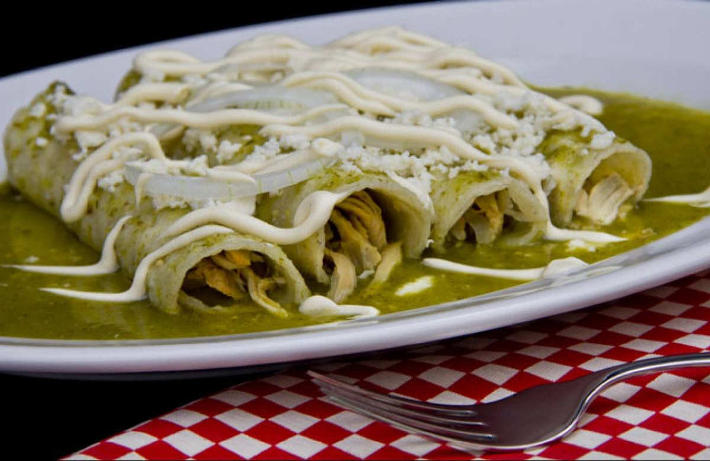
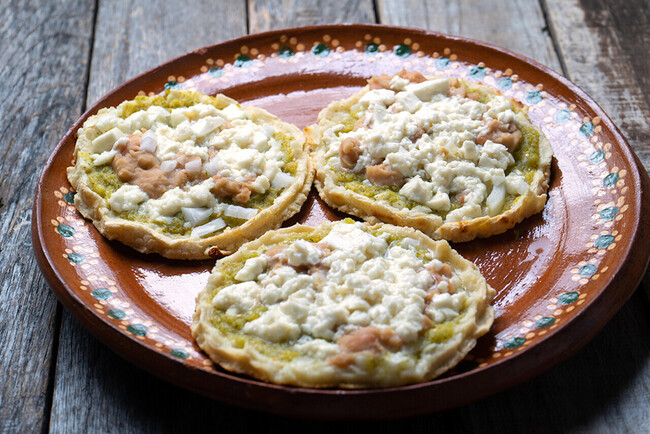
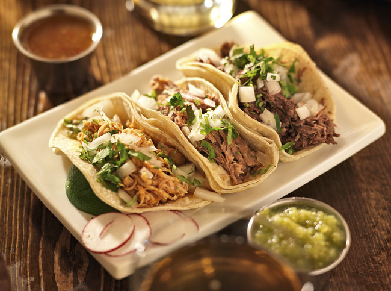

Aquí no solo compartimos recetas… compartimos recuerdos, aromas que llenan la casa y sabores que abrazan el corazón. Recetas de la Abuela nace del amor por esa cocina casera, sencilla y honesta, que nos hace volver a nuestra infancia con cada bocado.
En este rincón encontrarás platillos tradicionales, postres caseros y secretos de cocina que han pasado de generación en generación. Cada receta está pensada para que cocines con calma, con cariño, y sobre todo, con el alma.
Ya sea que estés buscando cómo preparar unas enchiladas como las que hacía tu abuela, un caldo para consentir a tu familia, o ese postre que perfumaba la cocina los domingos, aquí lo vas a encontrar.
Porque no hay nada como el sabor de casa.
Porque el ingrediente más importante… siempre será el amor.
  
20-may-25